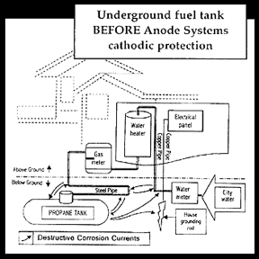
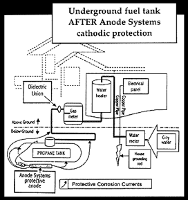

what is cathodic protection?
Cathodic protection is a procedure used to protect an object from corrosion by making it a cathode. To make a tank a cathode, you have to attach an anode to it. Both have to be in an electrolyte such as earth or water. To protect a propane tank, you would attach an anode consisting of a 17 pound bar of magnesium metal packed inside a cloth bag containing 28 pounds of conductive earth backfill with a wire that is attached to the magnesium and to the tank. The magnesium metal is a source of electrons for the iron atoms and it is from where d.c. current originates. As long as enough electrons flow from the magnesiu

m through the wire and the connections to the tank, the tank will not corrode. At the same time, a small amount of direct current flows from the magnesium metal, through the earth to the tank. The current is less than one amp.Steel has an average voltage of about -0.50 volts referenced to a copper sulfate electrode. Magnesium has a voltage of -1.75 volts. By connecting the two metals together, an average voltage is created. If the combined voltage is -0.85 volts or greater, the tank will be protected. If the voltage is below -0.85 volts, partial but not complete protection will exist.

To illustrate what was said above, assume that a new tank is installed and protected with magnesium anodes. As long as a combined voltage of at least -0.85 volts can be measured all around the tank, it meets the criteria for corrosion protection. If anodes are attached to an old pitted tank, and the voltage shifted from -0.50 volts to at least -0.85 volts, the pits should not become any deeper and the tank would be protected from further corrosion. Therefore, if corrosion has damaged a tank but not caused it to leak, cathodic protection can be installed and the tank does not have to be replaced.This also applies to buried piping. Because the voltage of underground structures cannot be measured with absolute accuracy over 100% of the surface area, generalizations are made. It is not possible for corrosion engineers to guarantee complete protection over every square inch of the tank's surface area.
© Copyright 1999-2015 Anode Systems Company
124 North 22nd Ct. Grand Junction, CO 81501 (888) 609-9766 toll-free
ANODE SYSTEMS COMPANY